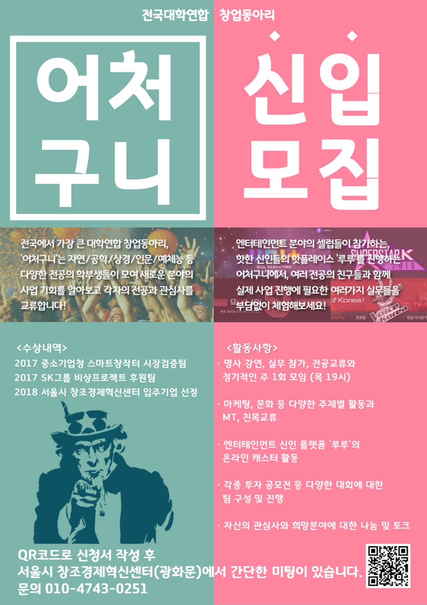
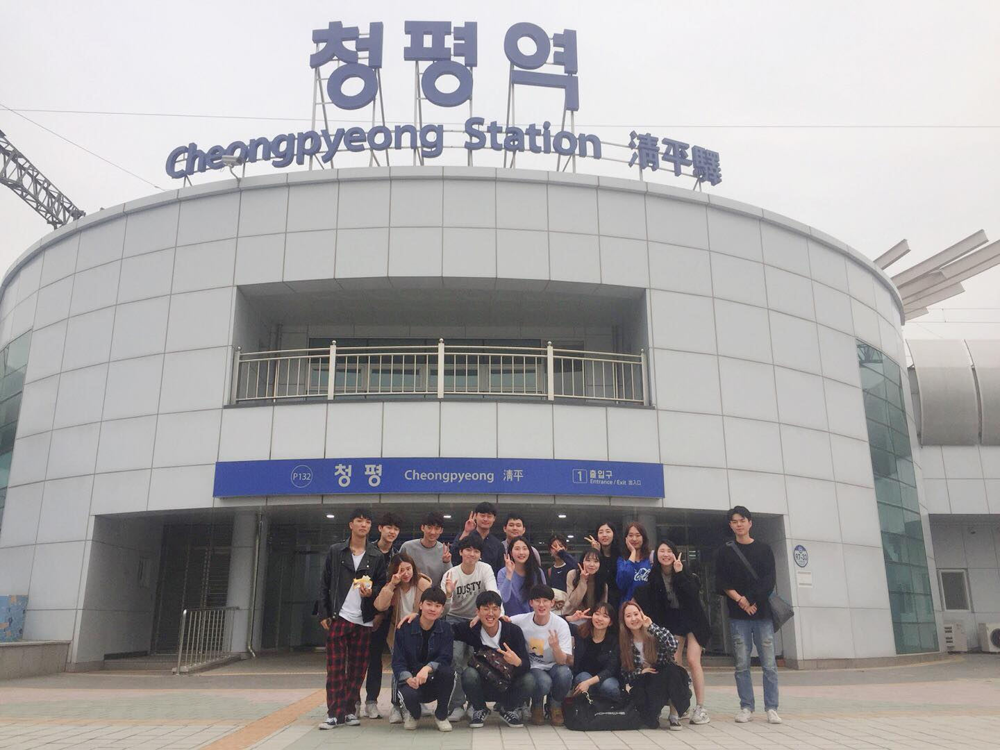
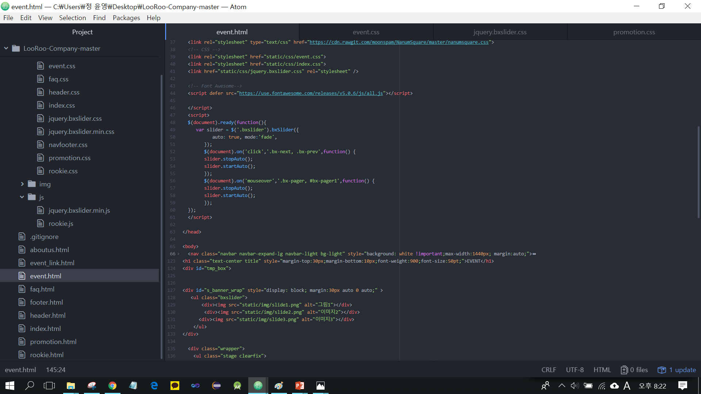

어처구니는 창업에 관심있는 학생들이 모여, 창업 관련 활동들을 통해 다양한 아이디어를 교류하며
더 나아가 실제 창업까지 경험할 수 있는 대학 연합 창업 동아리 입니다. 현재 실제로 '루루' 라는 컨텐츠로
창업을 진행하고 있으며, 저는 루루 개발팀에 참여 중입니다. 홈페이지 리뉴얼 및 곧 7월에 진행될 이벤트의 페이지
개발을 맡고 있습니다. 제가 개발을 하여 이벤트에 활용되고 많은 사람들이 볼 수 있게 된다는 점이 새로
웠습니다. 뿐만 아니라 디자인팀이나 기획팀과의 협업을 통해 결과를 만들어 나가는 것도 마치 실제 업무를 하는
것과 같은 경험이었습니다. 단순히 책을 피며 공부하는 것 보다 동아리에서 의견을 나눠가며 파트를 맡아 개발하는
것이 저의 실력향상 및 시야를 넓히는 데에도 많은 도움이 되고 있습니다.
루루 홈페이지 Go
어처구니 페이스북 홈페이지 Go
루루 페이스북 홈페이지 Go
|  |  |
|  |